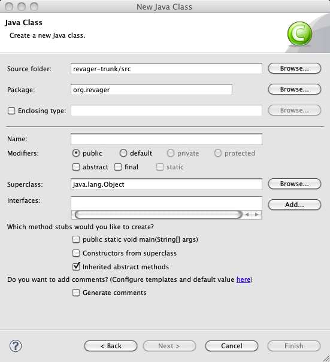

| Usability Pattern | Gute Standardwerte |
|---|---|
| Alias | Good Defaults |
| Problem | Benutzer möchten möglichst wenige Werte eingeben, um eine Aktion auszuführen. |
| Lösung |
Fülle Eingabefelder mit guten Standardwerten, wenn solche Werte bekannt sind. Als gute und sinnvolle Standardwerte können z. B.
verwendet werden. Erlaube Benutzern aber trotzdem, Standardwerte durch eigene Eingabewerte zu ersetzen. Verwende keine Standardwerte bei kritischen Eingaben (z. B. Passwörtern) oder bei Eingaben, für die keine guten Standardwerte bekannt sind. |
| Illustration | In einem Registrierungsformular für eine Website müssen Benutzer ihre Heimatadresse angeben. Da die Website deutschsprachig ist, wird als Standardwert für das Land „Deutschland“ vorgegeben. Dieser Wert kann aber von den Benutzern leicht geändert werden. |
| Beispiel |
Eclipse IDE: Erstellung einer neuen Java-Klasse Die Entwicklungsumgebung Eclipse bietet einen Dialog zur Erstellung einer neuen Java-Klasse. In diesem Dialog sind verschiedene Standardwerte voreingestellt, die der Benutzer ggf. ohne Änderung übernehmen kann. Das Quellcodeverzeichnis (Source Folder) und das Paket (Package) leitet das System dabei aus den Projekteinstellungen ab, die Oberklasse (Superclass: java.lang.Object) und der Wert für die Sichtbarkeit (Modifiers: public) entsprechen den fachlichen Einstellungen, die erfahrungsgemäß am häufigsten verwendet werden. Eclipse nutzt somit verschiedene „Quellen“ für Standardwerte, um Benutzern die Eingabe zu erleichtern.  Voreingestellte Standardwerte im Klassen-Dialog in Eclipse |
| Nutzungskontext |
|
| Begründung | Benutzer können schneller und effizienter mit dem System arbeiten, wenn sie Standardwerte übernehmen können, statt alle Werte selbst eingeben zu müssen. Selbst wenn der vorgeschlagene Standardwert nicht dem gewünschten Eingabewert entspricht, weist er Benutzer z. B. auf die Art oder das Format erwarteter bzw. gültiger Eingabewerte hin. |
| Risiken, Nachteile, Kosten |
Vorgegebene Standardwerte können von Benutzern übersehen oder nur flüchtig beachtet werden. Wenn das System Standardwerte für kritische Eingaben (z. B. Passwörter, später nicht mehr änderbare Eingabewerte) verwendet, können Benutzer diese Werte versehentlich übernehmen und so unerwünschte Resultate erhalten. Die Standardwerte müssen der Aufgabe angemessen sein und deshalb in einer großen Zahl von Fällen auch tatsächlich vom Benutzer übernommen werden; Standardwerte, die von Benutzern in den meisten Fällen geändert werden müssen, senken die Benutzungseffizienz und können Benutzer bei der Arbeit stören oder verärgern. |
| Zusammenspiel |
Ergänzung Auto-Vervollständigung Für Freitexteingaben können anstelle eines vorgegebenen Standardwerts auch sinnvolle Vorschläge per Auto-Vervollständigung vorgeschlagen werden, wenn z.B. mehrere gleichwertige Vorschläge bekannt sind. |
| Anforderungserhebung |
Identifiziere Eingaben, für die Standardwerte angegeben werden können.
|
| Anforderungsspezifikation |
Spezifiziere globale Funktionen (Use Cases) für den Einsatz des Usability Patterns „ Gute Standardwerte “:
Spezifiziere, für welche Interaktionen das Usability Pattern „ Gute Standardwerte “ eingesetzt wird. Annotiere und ergänze dazu vorhandene Use Cases :
|
{kind=link}